Software · Mar 2026 – present · Pre-release
Theioma
A self-hosted command centre where one person directs teams of coding agents, from a written brief to a build manual.

- 99hardware tools registered in the working tree (97 in the last commit)
- 8 + 11build rooms: core and discipline packs
- 562 msto the first audible sound of a voice turn (a spoken filler; the full turn takes 8.2 s), median of five
- 2briefs taken to a build manual: a drone and a robot arm
One person directs teams of Claude Code and Codex agents by text or voice. An orchestrator plans with the user, project managers staff workers in their own terminals, review and security agents check every finished task, and anything irreversible waits for a passkey-gated approval.
01The problem
Directing several coding agents at once is a management problem, not a typing problem. Without structure, one person ends up babysitting terminals, approving the same thing twice and losing what each agent learned. Theioma gives one person the structure a small engineering team already has: someone who plans, people who run the work, reviewers who check it, and a gate in front of anything that cannot be undone.

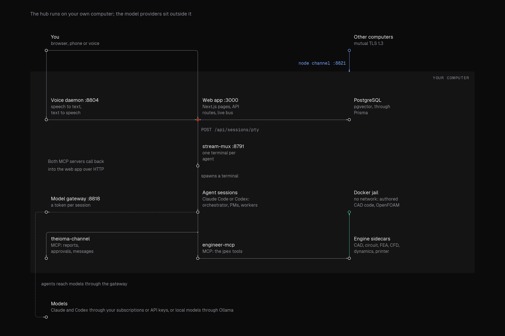
02How a project runs
- Orchestrator. Interviews the user, writes the plan and starts a project manager, a software one or an engineering one for a machine.
- Project managers and room stewards. Staff the work with Claude Code agents (or Codex agents, optionally), each in its own terminal with its brief and two MCP servers, one for reports, approvals and messages and one for the hardware tools.
- Review and security sentinels. Every finished code task passes a security reviewer, then a code reviewer, then the project manager before it counts.
- Approvals. Prints, flashes and desktop clicks file an approval and wait. Above low risk the approval asks for a passkey.

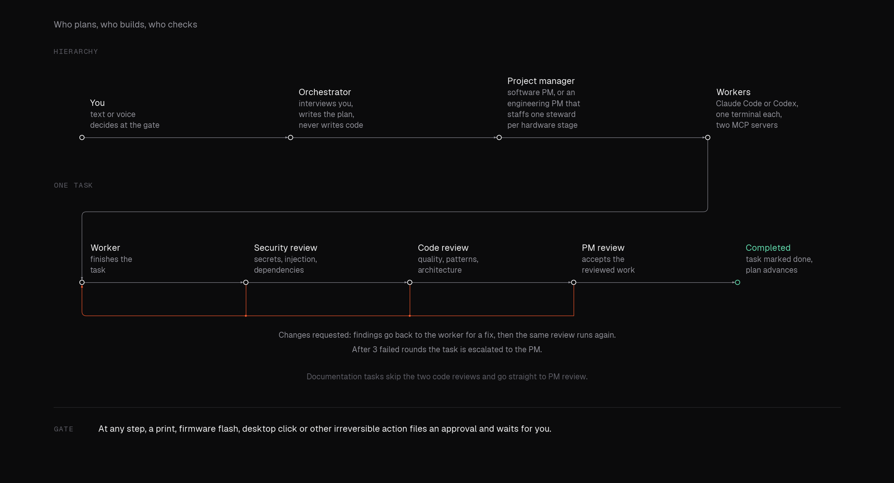

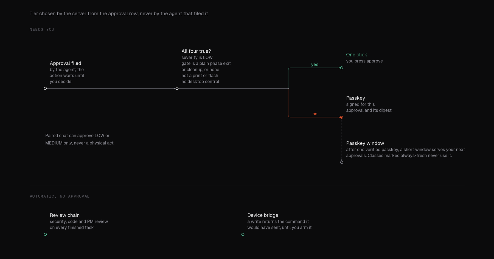

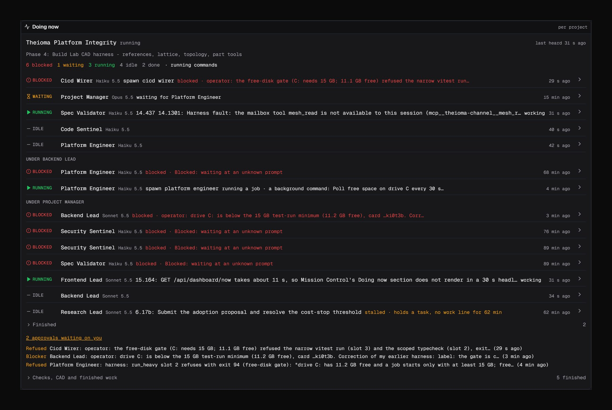

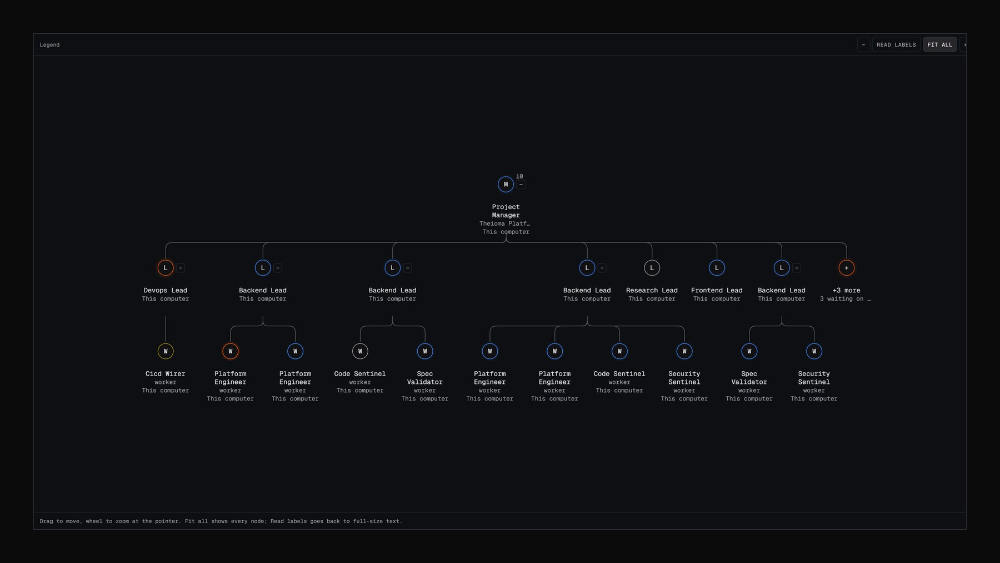

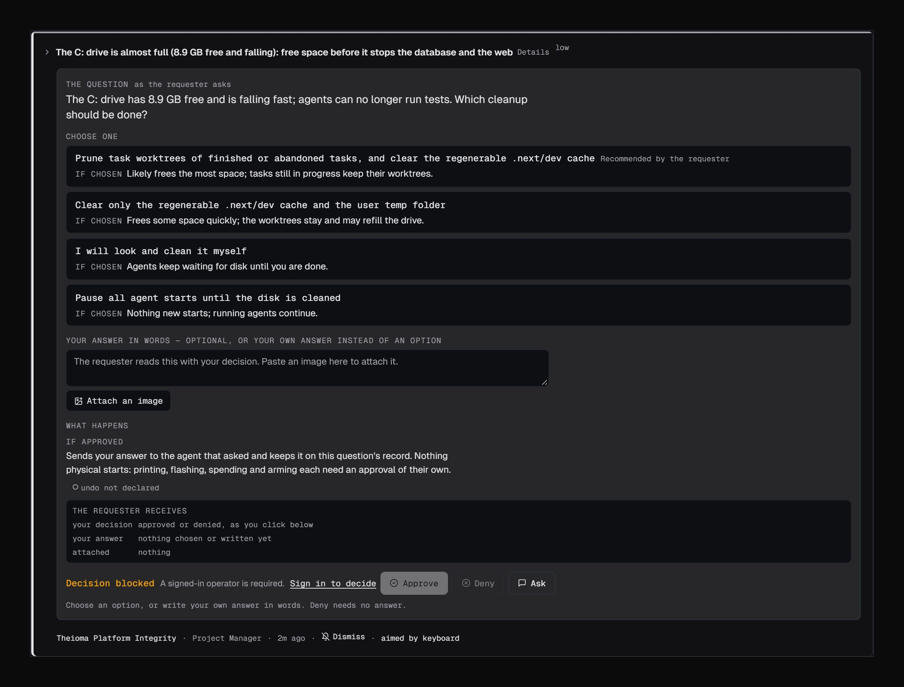
03J-PEX: from a written brief to a build manual
J-PEX is the hardware pipeline inside Theioma. A written brief goes through eight core rooms, each owned by a steward agent: laboratory, CAD studio, circuit lab, PCB workshop, firmware IDE, simulation bay, documents centre and fabrication bay. Eleven more rooms come from five discipline packs (aeronautical, mechatronics, product, vehicle and wiring). Agents drive it through 99 hardware tools, each with a voice twin.
The safety rules are part of the design. Authored CAD code and every OpenFOAM run execute only in a Docker container with no network. A room turns green only when every requirement has a receipt on the required revision. A print or firmware flash files an approval first, and the device bridge answers any write with the command it would have sent until you arm it yourself.

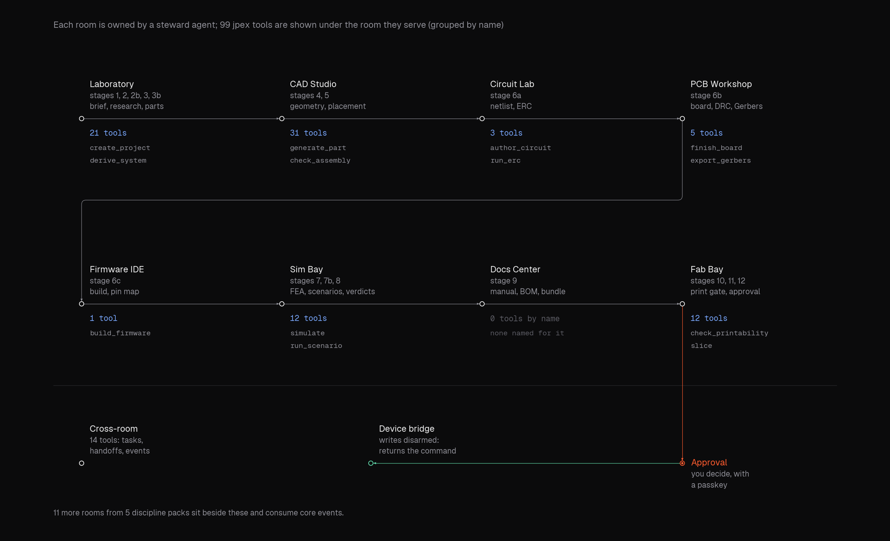

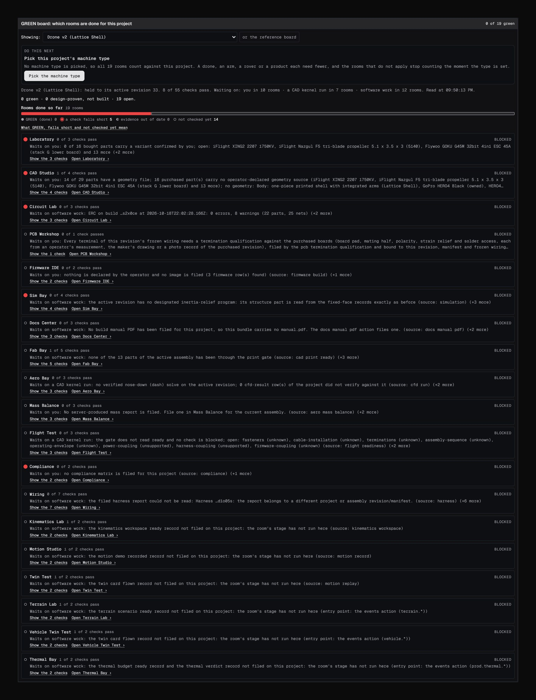

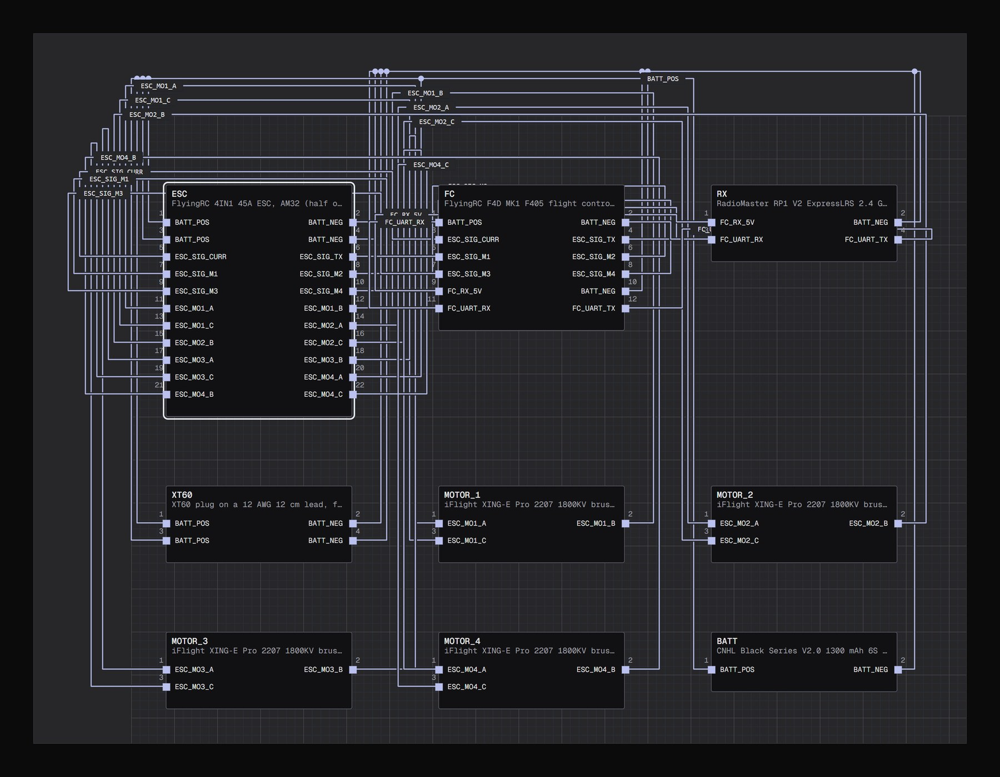

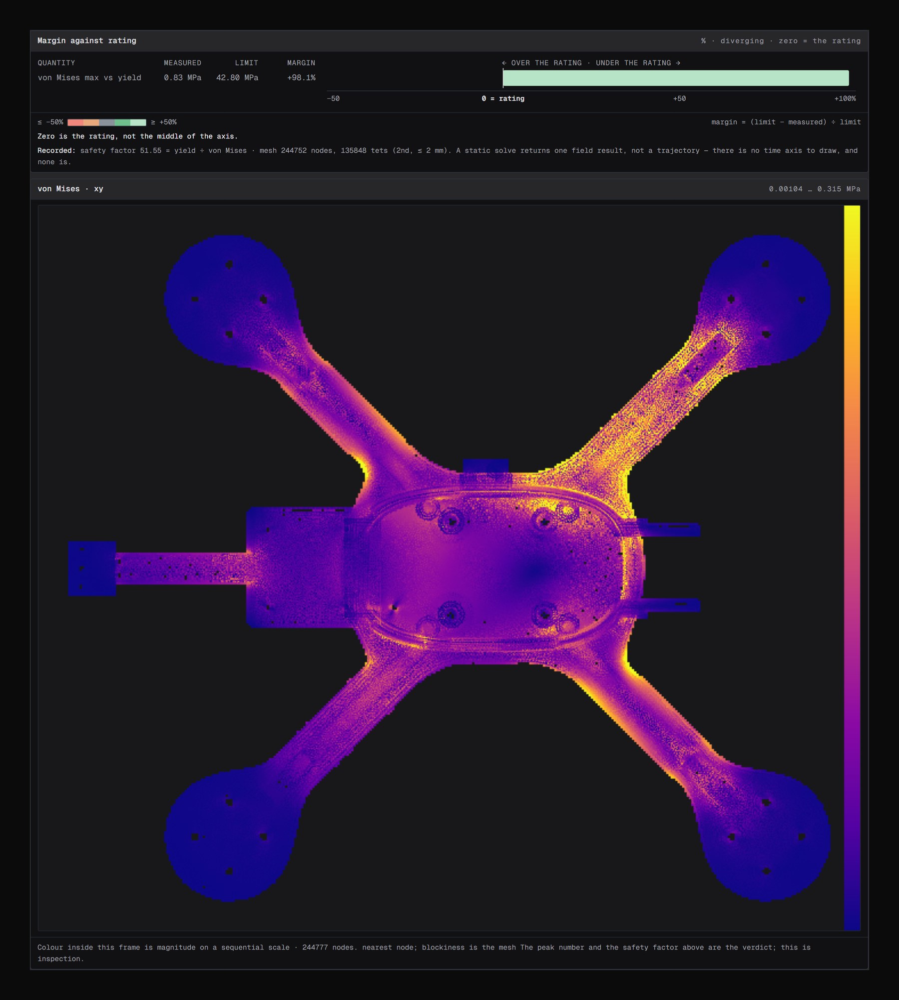

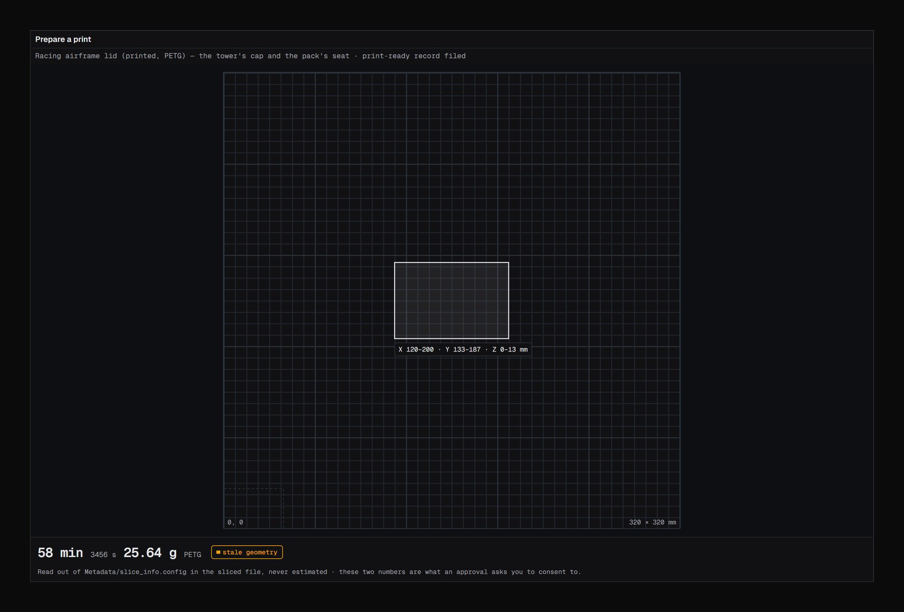
04What it is made of
The numbers on this page are counted from the repository by script, not copied from notes: 99 hardware tools grouped by room (97 in the last commit; two are uncommitted), 219 data models, 24 development services and 78 packages. The tool grouping is a reading of the tool names, since the code has no room field. The app itself organises work as projects, each a container for plans, agents and their reports.

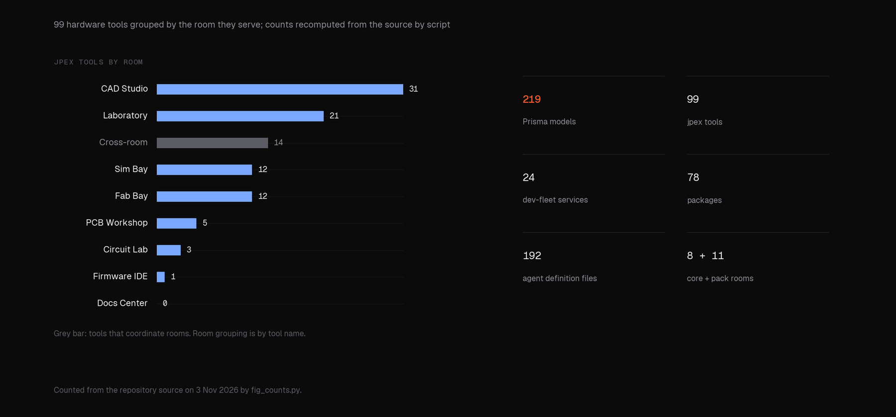

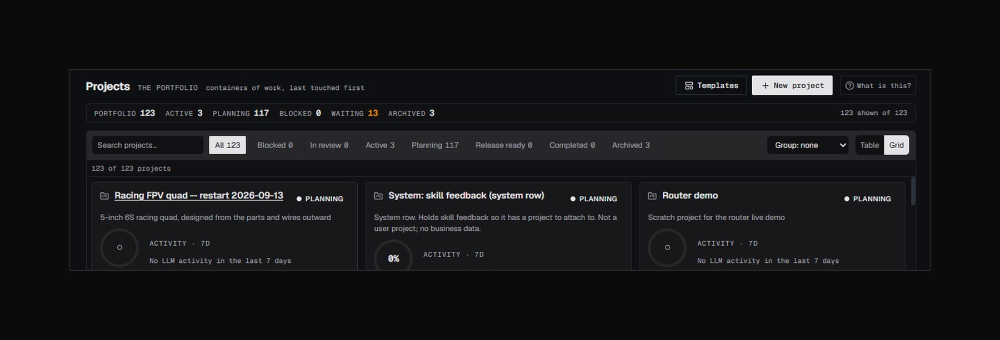
05Two briefs taken to a build manual
A drone brief went through every core room to a build manual on 6 September 2026, and a robot arm through the same rooms on 7 September. Neither has been printed or flashed yet. On a second drone run the platform started an engineering project manager, its room stewards and their workers without a person launching them, and closed stage 1.
06Voice
You can talk to it. Speech recognition and synthesis run on your own computer. A whole spoken turn through the app took 8.2 seconds on an RTX 5080 (23.1 seconds with recognition on the CPU), measured on synthetic audio. The first audible frame arrives at a median of 562 ms (95th percentile 731 ms over five turns), though that first sound is a spoken filler and not the answer. The Kokoro speech model alone improved from a median 262 ms to 153.6 ms to first audio in a paired test of 330 runs, though that faster path is not yet the served default. Nothing is under one second end to end yet, and the project's own status table says so.

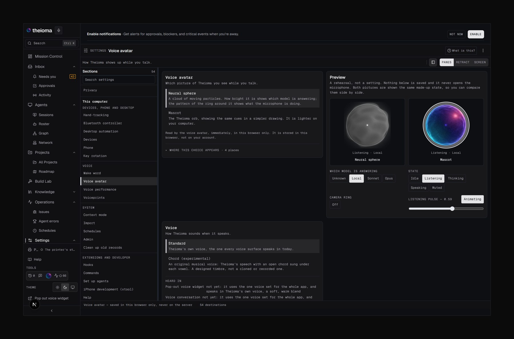
07What works today, and what does not
Every claim in the project's status table carries a receipt, and the table says what is unproven.
- Works: Claude Code sessions in their own terminals reporting through the channel; approvals with passkey sign-in; the drone and robot-arm briefs to a build manual; spoken turns on the local machine; mutual TLS 1.3 between three node processes on one computer, where a revoked machine was dropped in 458 ms and a task addressed to one node took a 141 ms round trip.
- Not yet: a print or firmware flash sent by Theioma, an edit applied by the live nightly learning passes, two physical computers, macOS and Linux, and a green whole test suite. On 4 October 2026 the suite had 43,218 tests, 42,065 passed and 120 failed in 14 files.
- A refusal worth noting: the fine-tune gate rejected a local adapter that did not beat it, moving exact match from 309 of 319 to 310 of 319, a gain of 0.0031 against a gate of 0.02.
08What comes next
This site is where the things Theioma produces will be published, software and hardware alike. The Lab section appears here as soon as the first entry lands.